The ancient Greeks recognized that interesting shapes can be formed by intersecting a plane with a double napped cone (i.e., two identical cones placed tip-to-tip as shown in the following figures). As these shapes are formed as sections of conics, they have earned the official name “conic sections.”
The three “most interesting” conic sections are given in the top row of Figure 10.1.1. They are the parabola, the ellipse (which includes circles) and the hyperbola. In each of these cases, the plane does not intersect the tips of the cones (usually taken to be the origin).
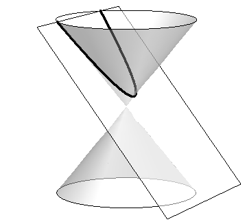(a)Parabola
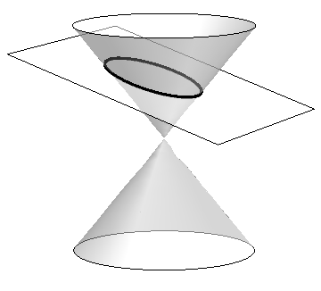(b)Ellipse
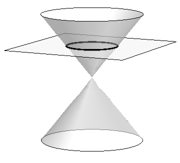(c)Circle
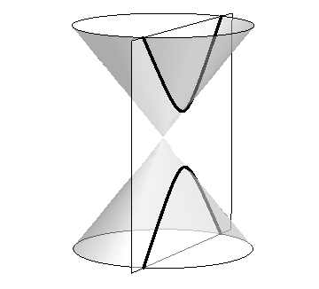(d)Hyperbola
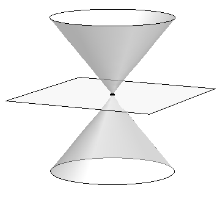(e)Point
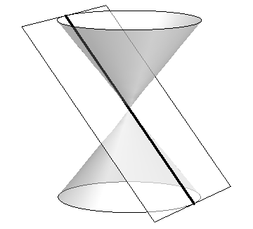(f)Line
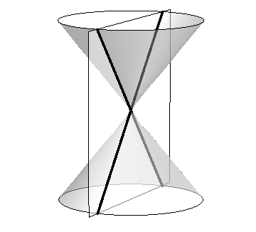(g)Crossed Lines
Figure10.1.1.Conic Sections
When the plane does contain the origin, three degenerate cones can be formed as shown the bottom row of Figure 10.1.1: a point, a line, and crossed lines. We focus here on the nondegenerate cases.
While the above geometric constructs define the conics in an intuitive, visual way, these constructs are not very helpful when trying to analyze the shapes algebraically or consider them as the graph of a function. It can be shown that all conics can be defined by the general second-degree equation
While this algebraic definition has its uses, most find another geometric perspective of the conics more beneficial.
Each nondegenerate conic can be defined as the locus, or set, of points that satisfy a certain distance property. These distance properties can be used to generate an algebraic formula, allowing us to study each conic as the graph of a function.
Subsection10.1.1Parabolas
Definition10.1.2.Parabola.
A parabola is the locus of all points equidistant from a point (called a focus) and a line (called the directrix) that does not contain the focus.
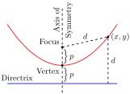
Figure10.1.3.Illustrating the definition of the parabola and establishing an algebraic formula
Figure 10.1.3 illustrates this definition. The point halfway between the focus and the directrix is the vertex. The line through the focus, perpendicular to the directrix, is the axis of symmetry, as the portion of the parabola on one side of this line is the mirror-image of the portion on the opposite side.
The definition leads us to an algebraic formula for the parabola. Let \(P=(x,y)\) be a point on a parabola whose focus is at \(F=(0,p)\) and whose directrix is at \(y=-p\text{.}\) (We'll assume for now that the focus lies on the \(y\)-axis; by placing the focus \(p\) units above the \(x\)-axis and the directrix \(p\) units below this axis, the vertex will be at \((0,0)\text{.}\))
We use the Distance Formula to find the distance \(d_1\) between \(F\) and \(P\text{:}\)
The geometric definition of the parabola has led us to the familiar quadratic function whose graph is a parabola with vertex at the origin. When we allow the vertex to not be at \((0,0)\text{,}\) we get the following standard form of the parabola.
Key Idea10.1.4.General Equation of a Parabola.
Vertical Axis of Symmetry: The equation of the parabola with vertex at \((h,k)\) and directrix \(y=k-p\) in standard form is
The vertex is located halfway between the focus and directrix, so \((h,k) = (1,2.5)\text{.}\) This gives \(p=-0.5\text{.}\) Using Key Idea 10.1.4 we have the equation of the parabola as
Example10.1.7.Finding the focus and directrix of a parabola.
Find the focus and directrix of the parabola \(x=\frac18y^2-y+1\text{.}\) The point \((7,12)\) lies on the graph of this parabola; verify that it is equidistant from the focus and directrix.
Hence the vertex is located at \((-1,4)\text{.}\) We have \(\frac18=\frac1{4p}\text{,}\) so \(p=2\text{.}\) We conclude that the focus is located at \((1,4)\) and the directrix is \(x=-3\text{.}\) The parabola is graphed in Figure 10.1.8, along with its focus and directrix.
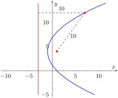
Figure10.1.8.The parabola described in Example 10.1.7. The distances from a point on the parabola to the focus and directrix are given.
The point \((7,12)\) lies on the graph and is \(7-(-3)=10\) units from the directrix. The distance from \((7,12)\) to the focus is:
Indeed, the point on the parabola is equidistant from the focus and directrix.
Reflective Property.
One of the fascinating things about the nondegenerate conic sections is their reflective properties. Parabolas have the following reflective property:
Any ray emanating from the focus that intersects the parabola reflects off along a line perpendicular to the directrix.
This is illustrated in Figure 10.1.9. The following theorem states this more rigorously.
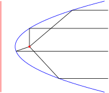
Figure10.1.9.Illustrating the parabola's reflective property
Theorem10.1.10.Reflective Property of the Parabola.
Let \(P\) be a point on a parabola. The tangent line to the parabola at \(P\) makes equal angles with the following two lines:
The line containing \(P\) and the focus \(F\text{,}\) and
The line perpendicular to the directrix through \(P\text{.}\)
Because of this reflective property, paraboloids (the 3D analogue of parabolas) make for useful flashlight reflectors as the light from the bulb, ideally located at the focus, is reflected along parallel rays. Satellite dishes also have paraboloid shapes. Signals coming from satellites effectively approach the dish along parallel rays. The dish then focuses these rays at the focus, where the sensor is located.
Subsection10.1.2Ellipses
Definition10.1.11.Ellipse.
An ellipse is the locus of all points whose sum of distances from two fixed points, each a focus of the ellipse, is constant.
An easy way to visualize this construction of an ellipse is to pin both ends of a string to a board. The pins become the foci. Holding a pencil tight against the string places the pencil on the ellipse; the sum of distances from the pencil to the pins is constant: the length of the string. See Figure 10.1.12.
Figure10.1.12.Illustrating the construction of an ellipse with pins, pencil and string
We can again find an algebraic equation for an ellipse using this geometric definition. Let the foci be located along the \(x\)-axis, \(c\) units from the origin. Let these foci be labeled as \(F_1 = (-c,0)\) and \(F_2=(c,0)\text{.}\) Let \(P=(x,y)\) be a point on the ellipse. The sum of distances from \(F_1\) to \(P\) (\(d_1\)) and from \(F_2\) to \(P\) (\(d_2\)) is a constant \(d\text{.}\) That is, \(d_1+d_2=d\text{.}\) Using the Distance Formula, we have
Using a fair amount of algebra can produce the following equation of an ellipse (note that the equation is an implicitly defined function; it has to be, as an ellipse fails the Vertical Line Test):
This choice of \(a\) and \(b\) is not without reason; as shown in Figure 10.1.13, the values of \(a\) and \(b\) have geometric meaning in the graph of the ellipse.
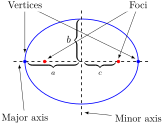
Figure10.1.13.Labeling the significant features of an ellipse
In general, the two foci of an ellipse lie on the major axis of the ellipse, and the midpoint of the segment joining the two foci is the center. The major axis intersects the ellipse at two points, each of which is a vertex. The line segment through the center and perpendicular to the major axis is the minor axis. The “constant sum of distances” that defines the ellipse is the length of the major axis, i.e., \(2a\text{.}\)
Allowing for the shifting of the ellipse gives the following standard equations.
Key Idea10.1.14.Standard Equation of the Ellipse.
The equation of an ellipse centered at \((h,k)\) with major axis of length \(2a\) and minor axis of length \(2b\) in standard form is:
Horizontal major axis:\(\ds \frac{(x-h)^2}{a^2}+\frac{(y-k)^2}{b^2}=1\text{.}\)
Vertical major axis:\(\ds \frac{(x-h)^2}{b^2}+\frac{(y-k)^2}{a^2}=1\text{.}\)
The foci lie along the major axis, \(c\) units from the center, where \(c^2=a^2-b^2\text{.}\)
Example10.1.15.Finding the equation of an ellipse.
Find the general equation of the ellipse graphed in Figure 10.1.16.
The center is located at \((-3,1)\text{.}\) The distance from the center to a vertex is 5 units, hence \(a=5\text{.}\) The minor axis seems to have length 4, so \(b=2\text{.}\) Thus the equation of the ellipse is
It is simple to graph an ellipse once it is in standard form. In order to put the given equation in standard form, we must complete the square with both the \(x\) and \(y\) terms. We first rewrite the equation by regrouping:
We see the center of the ellipse is at \((1,2)\text{.}\) We have \(a=3\) and \(b=2\text{;}\) the major axis is horizontal, so the vertices are located at \((-2,2)\) and \((4,2)\text{.}\) We find \(c=\sqrt{9-4} = \sqrt{5}\approx 2.24\text{.}\) The foci are located along the major axis, approximately \(2.24\) units from the center, at \((1\pm 2.24,2)\text{.}\) This is all graphed in Figure 10.1.18
the familiar equation of the circle centered at \((h,k)\) with radius \(a\text{.}\) Since \(a=b\text{,}\)\(c = \sqrt{a^2-b^2}=0\text{.}\) The circle has “two” foci, but they lie on the same point, the center of the circle.
Consider Figure 10.1.19, where several ellipses are graphed with \(a=1\text{.}\) In Figure 10.1.(a), we have \(c=0\) and the ellipse is a circle. As \(c\) grows, the resulting ellipses look less and less circular. A measure of this “noncircularness” is eccentricity.
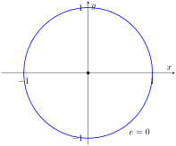(a)
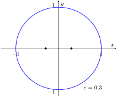(b)
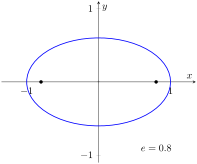(c)
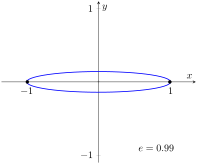(d)
Figure10.1.19.Understanding the eccentricity of an ellipse
Definition10.1.20.Eccentricity of an Ellipse.
The eccentricity \(e\) of an ellipse is \(\ds e=\frac{c}{a}\text{.}\)
The eccentricity of a circle is 0; that is, a circle has no “noncircularness.” As \(c\) approaches \(a\text{,}\)\(e\) approaches 1, giving rise to a very noncircular ellipse, as seen in Figure 10.1.(d).
It was long assumed that planets had circular orbits. This is known to be incorrect; the orbits are elliptical. Earth has an eccentricity of \(0.0167\) — it has a nearly circular orbit. Mercury's orbit is the most eccentric, with \(e=0.2056\text{.}\) (Pluto's eccentricity is greater, at \(e=0.248\text{,}\) the greatest of all the currently known dwarf planets.) The planet with the most circular orbit is Venus, with \(e=0.0068\text{.}\) The Earth's moon has an eccentricity of \(e=0.0549\text{,}\) also very circular.
Reflective Property.
The ellipse also possesses an interesting reflective property. Any ray emanating from one focus of an ellipse reflects off the ellipse along a line through the other focus, as illustrated in Figure 10.1.21. This property is given formally in the following theorem.
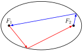
Figure10.1.21.Illustrating the reflective property of an ellipse
Theorem10.1.22.Reflective Property of an Ellipse.
Let \(P\) be a point on a ellipse with foci \(F_1\) and \(F_2\text{.}\) The tangent line to the ellipse at \(P\) makes equal angles with the following two lines:
The line through \(F_1\) and \(P\text{,}\) and
The line through \(F_2\) and \(P\text{.}\)
This reflective property is useful in optics and is the basis of the phenomena experienced in whispering halls.
Subsection10.1.3Hyperbolas
The definition of a hyperbola is very similar to the definition of an ellipse; we essentially just change the word “sum” to “difference.”
Definition10.1.23.Hyperbola.
A hyperbola is the locus of all points where the absolute value of difference of distances from two fixed points, each a focus of the hyperbola, is constant.
We do not have a convenient way of visualizing the construction of a hyperbola as we did for the ellipse. The geometric definition does allow us to find an algebraic expression that describes it. It will be useful to define some terms first.
The two foci lie on the transverse axis of the hyperbola; the midpoint of the line segment joining the foci is the center of the hyperbola. The transverse axis intersects the hyperbola at two points, each a vertex of the hyperbola. The line through the center and perpendicular to the transverse axis is the conjugate axis. This is illustrated in Figure 10.1.24. It is easy to show that the constant difference of distances used in the definition of the hyperbola is the distance between the vertices, i.e., \(2a\text{.}\)
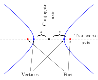
Figure10.1.24.Labeling the significant features of a hyperbola
Key Idea10.1.25.Standard Equation of a Hyperbola.
The equation of a hyperbola centered at \((h,k)\) in standard form is:
The vertices are located \(a\) units from the center and the foci are located \(c\) units from the center, where \(c^2 = a^2+b^2\text{.}\)
Graphing Hyperbolas.
Consider the hyperbola \(\frac{x^2}9-\frac{y^2}1 = 1\text{.}\) Solving for \(y\text{,}\) we find \(y=\pm\sqrt{x^2/9-1}\text{.}\) As \(x\) grows large, the “\(-1\)” part of the equation for \(y\) becomes less significant and \(y\approx \pm\sqrt{x^2/9} = \pm x/3\text{.}\) That is, as \(x\) gets large, the graph of the hyperbola looks very much like the lines \(y=\pm x/3\text{.}\) These lines are asymptotes of the hyperbola, as shown in Figure 10.1.26.
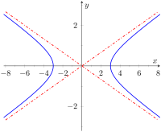
Figure10.1.26.Graphing the hyperbola \(\frac{x^2}9-\frac{y^2}1 = 1\) along with its asymptotes, \(y=\pm x/3\)
This is a valuable tool in sketching. Given the equation of a hyperbola in general form, draw a rectangle centered at \((h,k)\) with sides of length \(2a\) parallel to the transverse axis and sides of length \(2b\) parallel to the conjugate axis. (See Figure 10.1.27 for an example with a horizontal transverse axis.) The diagonals of the rectangle lie on the asymptotes.
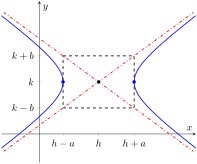
Figure10.1.27.Using the asymptotes of a hyperbola as a graphing aid
These lines pass through \((h,k)\text{.}\) When the transverse axis is horizontal, the slopes are \(\pm b/a\text{;}\) when the transverse axis is vertical, their slopes are \(\pm a/b\text{.}\) This gives equations:
Horizontal Transverse Axis
Vertical Transverse Axis
\(\ds y=\pm\frac ba(x-h)+k\)
\(\ds y=\pm\frac ab(x-h)+k\text{.}\)
Example10.1.28.Graphing a hyperbola.
Sketch the hyperbola given by \(\ds \frac{(y-2)^2}{25}-\frac{(x-1)^2}{4}=1\text{.}\)
The hyperbola is centered at \((1,2)\text{;}\)\(a=5\) and \(b=2\text{.}\) In Figure 10.1.29 we draw the prescribed rectangle centered at \((1,2)\) along with the asymptotes defined by its diagonals. The hyperbola has a vertical transverse axis, so the vertices are located at \((1,7)\) and \((1,-3)\text{.}\) This is enough to make a good sketch.
We also find the location of the foci: as \(c^2= a^2+b^2\text{,}\) we have \(c=\sqrt{29}\approx 5.4\text{.}\) Thus the foci are located at \((1,2\pm 5.4)\) as shown in the figure.
Example10.1.30.Graphing a hyperbola.
Sketch the hyperbola given by \(9x^2-y^2+2y=10\text{.}\)
We must complete the square to put the equation in general form. (We recognize this as a hyperbola since it is a general quadratic equation and the \(x^2\) and \(y^2\) terms have opposite signs.)
We see the hyperbola is centered at \((0,1)\text{,}\) with a horizontal transverse axis, where \(a=1\) and \(b=3\text{.}\) The appropriate rectangle is sketched in Figure 10.1.31 along with the asymptotes of the hyperbola. The vertices are located at \((\pm 1,1)\text{.}\) We have \(c=\sqrt{10}\approx 3.2\text{,}\) so the foci are located at \((\pm 3.2,1)\) as shown in the figure.
Eccentricity.
Definition10.1.32.Eccentricity of a Hyperbola.
The eccentricity of a hyperbola is \(\ds e=\frac ca\text{.}\)
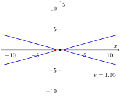(a)
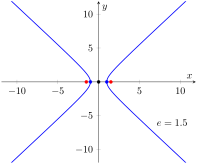(b)
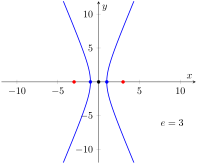(c)
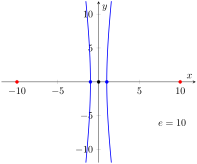(d)
Figure10.1.33.Understanding the eccentricity of a hyperbola
Note that this is the definition of eccentricity as used for the ellipse. When \(c\) is close in value to \(a\) (i.e., \(e\approx 1\)), the hyperbola is very narrow (looking almost like crossed lines). Figure 10.1.33 shows hyperbolas centered at the origin with \(a=1\text{.}\) The graph in Figure 10.1.(a) has \(c=1.05\text{,}\) giving an eccentricity of \(e=1.05\text{,}\) which is close to 1. As \(c\) grows larger, the hyperbola widens and begins to look like parallel lines, as shown in Figure 10.1.(d).
Reflective Property.
Hyperbolas share a similar reflective property with ellipses. However, in the case of a hyperbola, a ray emanating from a focus that intersects the hyperbola reflects along a line containing the other focus, but moving away from that focus. This is illustrated in Figure 10.1.35 (on the next page). Hyperbolic mirrors are commonly used in telescopes because of this reflective property. It is stated formally in the following theorem.
Theorem10.1.34.Reflective Property of Hyperbolas.
Let \(P\) be a point on a hyperbola with foci \(F_1\) and \(F_2\text{.}\) The tangent line to the hyperbola at \(P\) makes equal angles with the following two lines:
The line through \(F_1\) and \(P\text{,}\) and
The line through \(F_2\) and \(P\text{.}\)
Location Determination.
Determining the location of a known event has many practical uses (locating the epicenter of an earthquake, an airplane crash site, the position of the person speaking in a large room, etc.).
To determine the location of an earthquake's epicenter, seismologists use trilateration (not to be confused with triangulation). A seismograph allows one to determine how far away the epicenter was; using three separate readings, the location of the epicenter can be approximated.
A key to this method is knowing distances. What if this information is not available? Consider three microphones at positions \(A\text{,}\)\(B\) and \(C\) which all record a noise (a person's voice, an explosion, etc.) created at unknown location \(D\text{.}\) The microphone does not “know” when the sound was created, only when the sound was detected. How can the location be determined in such a situation?
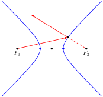
Figure10.1.35.Illustrating the reflective property of a hyperbola
If each location has a clock set to the same time, hyperbolas can be used to determine the location. Suppose the microphone at position \(A\) records the sound at exactly 12:00, location \(B\) records the time exactly 1 second later, and location \(C\) records the noise exactly 2 seconds after that. We are interested in the difference of times. Since the speed of sound is approximately 340 m/s, we can conclude quickly that the sound was created 340 meters closer to position \(A\) than position \(B\text{.}\) If \(A\) and \(B\) are a known distance apart (as shown in Figure 10.1.36.(a)), then we can determine a hyperbola on which \(D\) must lie.
The “difference of distances” is 340; this is also the distance between vertices of the hyperbola. So we know \(2a= 340\text{.}\) Positions \(A\) and \(B\) lie on the foci, so \(2c=1000\text{.}\) From this we can find \(b\approx 470\) and can sketch the hyperbola, given in Figure 10.1.36.(b). We only care about the side closest to \(A\text{.}\) (Why?)
We can also find the hyperbola defined by positions \(B\) and \(C\text{.}\) In this case, \(2a = 680\) as the sound traveled an extra 2 seconds to get to \(C\text{.}\) We still have \(2c=1000\text{,}\) centering this hyperbola at \((-500,500)\text{.}\) We find \(b\approx 367\text{.}\) This hyperbola is sketched in Figure 10.1.36.(c). The intersection point of the two graphs is the location of the sound, at approximately \((188,-222.5)\text{.}\)
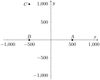(a)
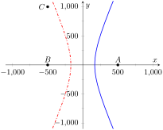(b)
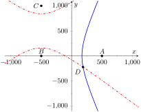(c)
Figure10.1.36.
This chapter explores curves in the plane, in particular curves that cannot be described by functions of the form \(y=f(x)\text{.}\) In this section, we learned of ellipses and hyperbolas that are defined implicitly, not explicitly. In the following sections, we will learn completely new ways of describing curves in the plane, using parametric equations and polar coordinates, then study these curves using calculus techniques.
Exercises10.1.4Exercises
Terms and Concepts
1.
What is the difference between degenerate and nondegenerate conics?
2.
Use your own words to explain what the eccentricity of an ellipse measures.
3.
What has the largest eccentricity: an ellipse or a hyperbola?
4.
Explain why the following is true: “If the coefficient of the \(x^2\) term in the equation of an ellipse in standard form is smaller than the coefficient of the \(y^2\) term, then the ellipse has a horizontal major axis.”
5.
Explain how one can quickly look at the equation of a hyperbola in standard form and determine whether the transverse axis is horizontal or vertical.
6.
Fill in the blank: It can be said that ellipses and hyperbolas share the same reflective property: “A ray emanating from one focus will reflect off the conic along a that contains the other focus.”
Problems
Exercise Group.
In the following exercises, find the equation of the parabola defined by the given information. Sketch the parabola.
7.
Focus: \((3,2)\text{;}\) directrix: \(y=1\)
8.
Focus: \((-1,-4)\text{;}\) directrix: \(y=2\)
9.
Focus: \((1,5)\text{;}\) directrix: \(x=3\)
10.
Focus: \((1/4,0)\text{;}\) directrix: \(x=-1/4\)
11.
Focus: \((1,1)\text{;}\) vertex: \((1,2)\)
12.
Focus: \((-3,0)\text{;}\) vertex: \((0,0)\)
13.
Vertex: \((0,0)\text{;}\) directrix: \(y=-1/16\)
14.
Vertex: \((2,3)\text{;}\) directrix: \(x=4\)
Exercise Group.
In the following exercises, the equation of a parabola and a point on its graph are given. Find the focus and directrix of the parabola, and verify that the given point is equidistant from the focus and directrix.
15.
\(y=\frac14x^2\text{,}\)\(P=(2,1)\)
16.
\(x=\frac18(y-2)^2+3\text{,}\)\(P=(11,10)\)
Exercise Group.
In the following exercises, sketch the ellipse defined by the given equation. Label the center, foci and vertices.
17.
\(\ds \frac{(x-1)^2}{3}+\frac{(y-2)^2}{5}=1\)
18.
\(\ds \frac{1}{25}x^2+\frac{1}{9}(y+3)^2=1\)
Exercise Group.
In the following exercises, find the equation of the ellipse shown in the graph. Give the location of the foci and the eccentricity of the ellipse.
19.
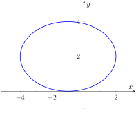
20.
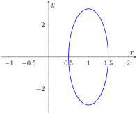
Exercise Group.
In the following exercises, find the equation of the ellipse defined by the given information. Sketch the elllipse.
Foci: \((-2,3)\) and \((8,3)\text{;}\) vertices: \((-1,3)\) and \((7,3)\)
38.
Foci: \((3,-2)\) and \((3,8)\text{;}\) vertices: \((3,0)\) and \((3,6)\)
Exercise Group.
In the following exercises, write the equation of the hyperbola in standard form.
39.
\(3x^2-4y^2=12\)
40.
\(3x^2-y^2+2y=10\)
41.
\(x^2-10y^2+40y=30\)
42.
\((4y-x)(4y+x)=4\)
43.
Consider the ellipse given by \(\ds \frac{(x-1)^2}{4}+\frac{(y-3)^2}{12}=1\text{.}\)
Verify that the foci are located at \((1,3\pm 2\sqrt{2})\text{.}\)
The points \(P_1 = (2,6)\) and \(P_2 = (1+\sqrt{2},3+\sqrt{6}) \approx (2.414,5.449)\) lie on the ellipse. Verify that the sum of distances from each point to the foci is the same.
44.
Johannes Kepler discovered that the planets of our solar system have elliptical orbits with the Sun at one focus. The Earth's elliptical orbit is used as a standard unit of distance; the distance from the center of Earth's elliptical orbit to one vertex is 1 Astronomical Unit, or A.U.
The following table gives information about the orbits of three planets.
Planet
Distance from center to vertex
Orbit eccentricity
Mercury
\(0.387\) A.U.
\(0.2056\)
Earth
1 A.U.
\(0.0167\)
Mars
\(1.524\) A.U.
\(0.0934\)
In an ellipse, knowing \(c^2=a^2-b^2\) and \(e=c/a\) allows us to find \(b\) in terms of \(a\) and \(e\text{.}\) Show \(b=a\sqrt{1-e^2}\text{.}\)
For each planet, find equations of their elliptical orbit of the form \(\ds\frac{x^2}{a^2}+\frac{y^2}{b^2}=1\text{.}\) (This places the center at \((0,0)\text{,}\) but the Sun is in a different location for each planet.)
Shift the equations so that the Sun lies at the origin. Plot the three elliptical orbits.
45.
A loud sound is recorded at three stations that lie on a line as shown in the figure below. Station \(A\) recorded the sound 1 second after Station \(B\text{,}\) and Station \(C\) recorded the sound 3 seconds after \(B\text{.}\) Using the speed of sound as 340m/s, determine the location of the sound's origination.